WooCommerceの覚書 | ワクガンス
WooCommerceのインストール
手順
WordPressにてWooCommerceのプラグインをインストールする。
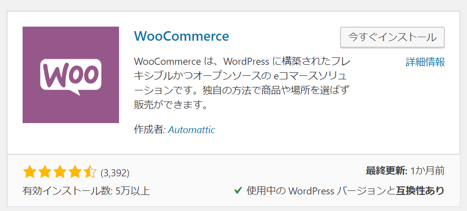/> 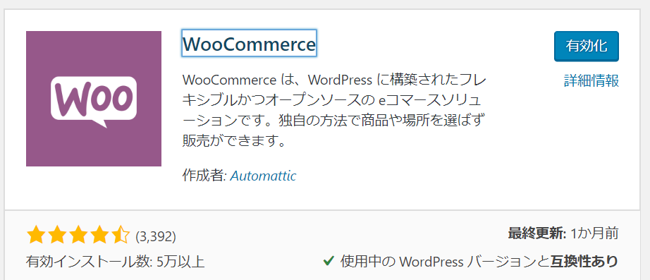/>
インストール後、WordPressの左側メニューからWooCommerceにアクセスすると初期設定を行う画面になる。(うろ覚え)
お店の情報等を入力して適当にすすめる。
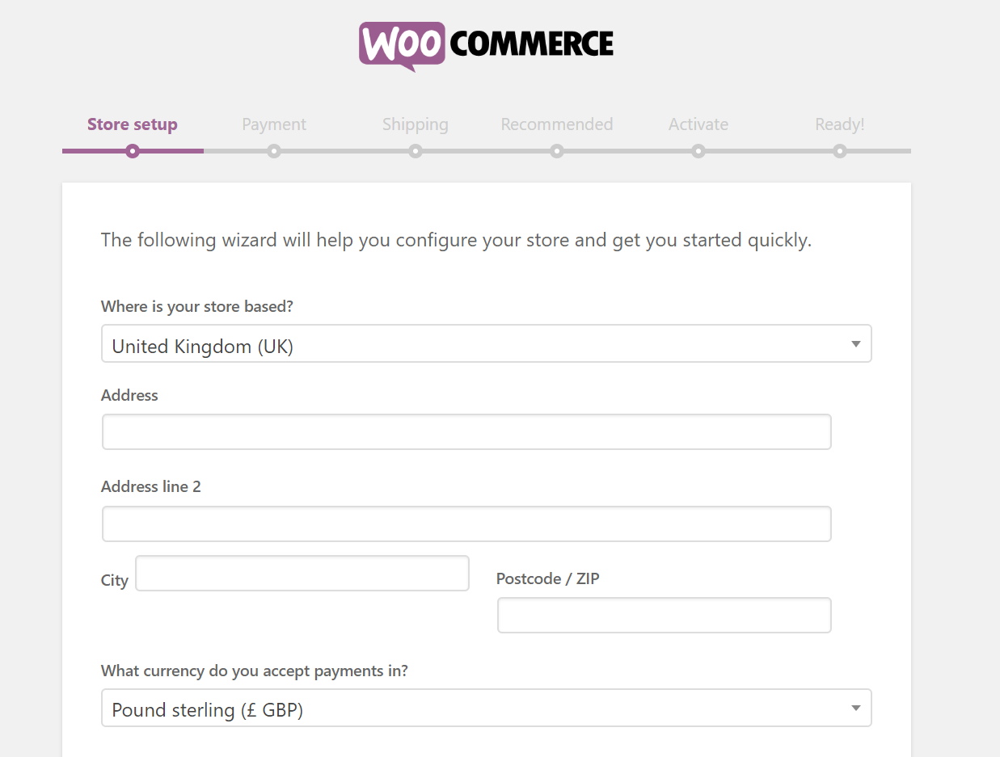
支払い方法をいくつか指定できるようであるが、こちらも適用に選択する。
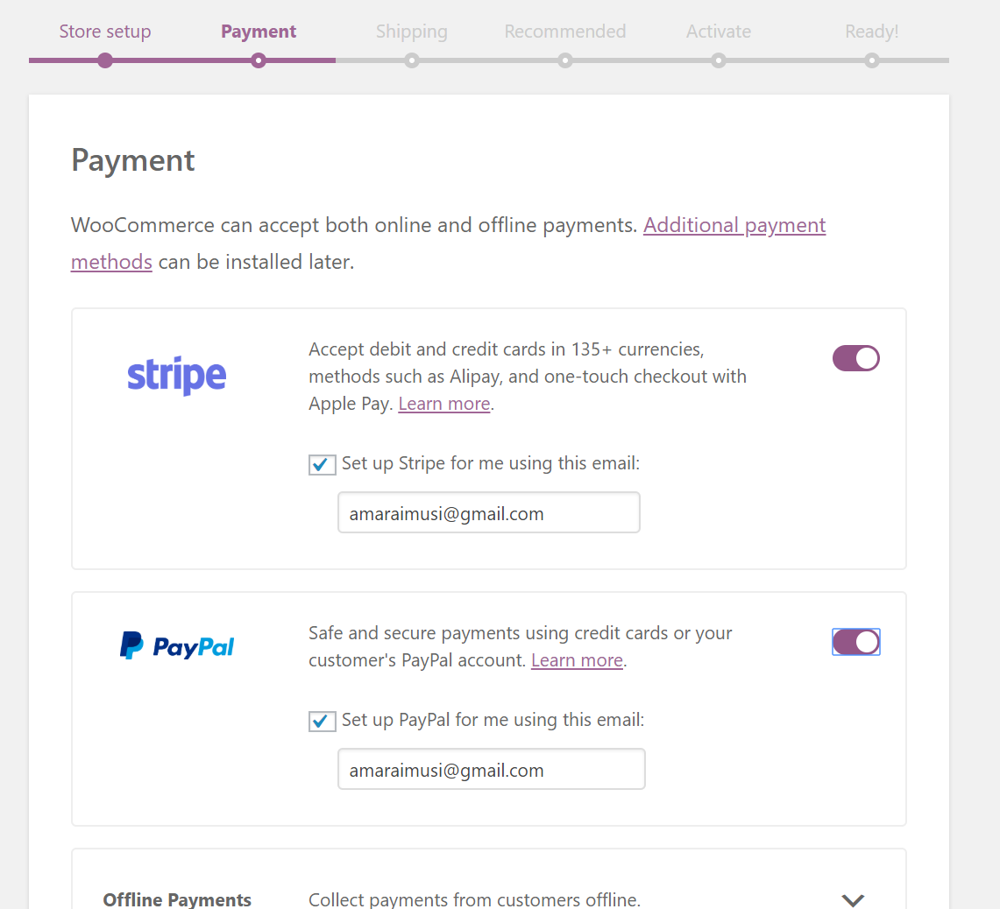
出荷に関する入力。あとで編集できるので適用でよい。
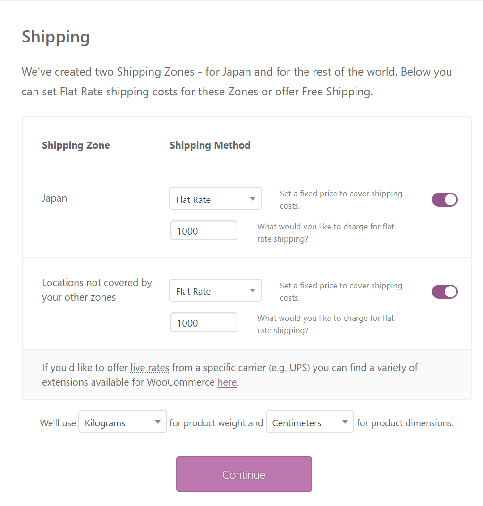
JetPackプラグインをインストールする。
JetPackは問い合わせフォームやSNS連携など大きな機能をパックにしたプラグイン。
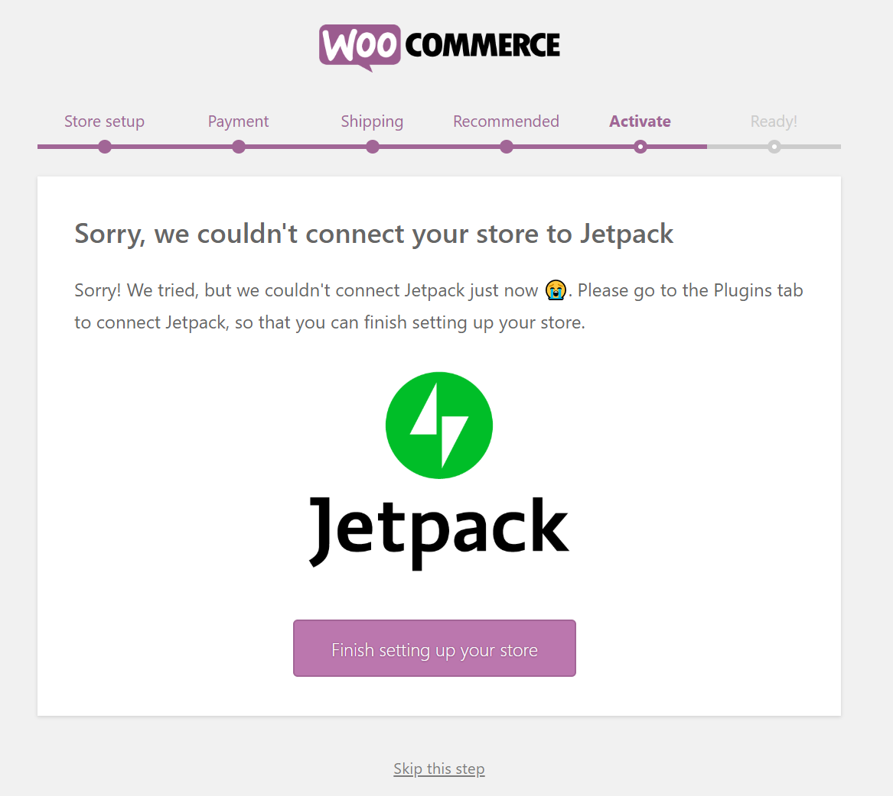
「WooCommerce Admin」プラグインのインストール。
基本的な設定入力が終わったのち、もう一度「WooCommerce」を押すと 「WooCommerce Admin」のインストールが求められる。
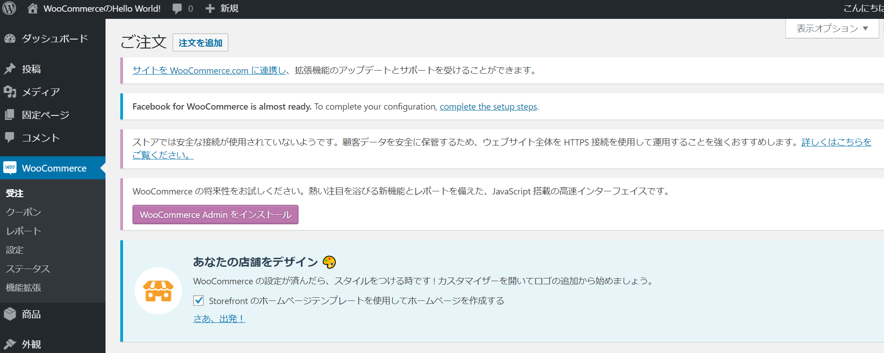
商品登録画面を開く。
商品登録画面はWordPressの左メニューに存在するProductからアクセスできる。(new item)
日本語翻訳が適用されている場合、Productではなく「商品」として表示されている。
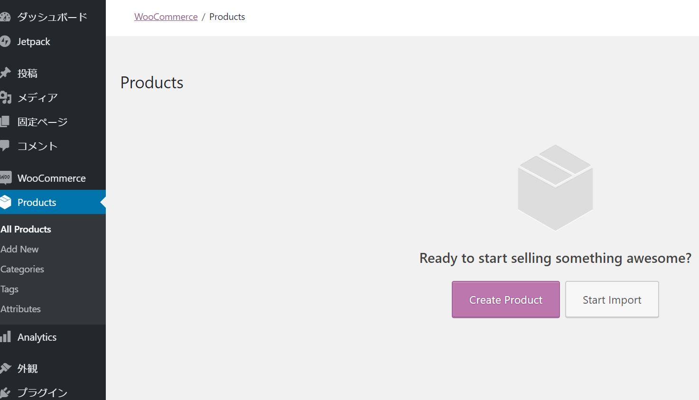
商品情報を入力する。WordPressの投稿ページを流用しているようである。
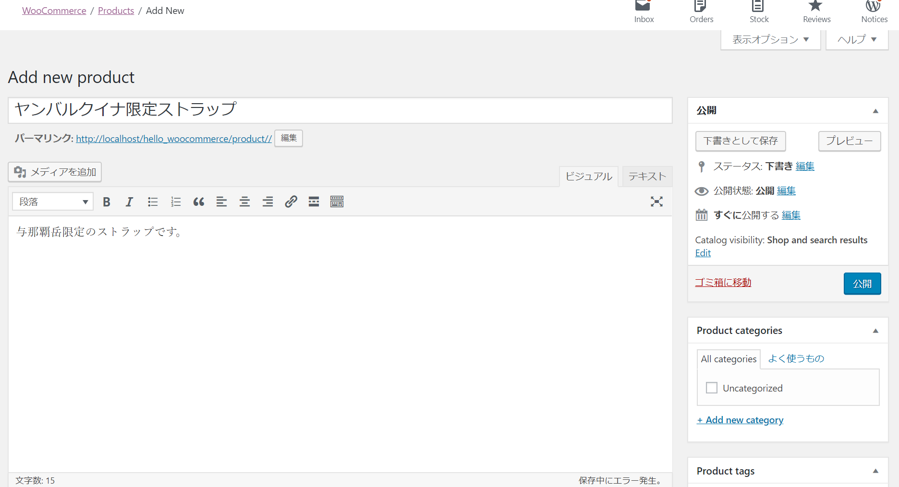
ショップページを見る。
例)
プロジェクト名が「hello_woocommerce」である場合、以下のURLでアクセスするとお客が見るページにアクセスできる。
http://localhost/hello_woocommerce/
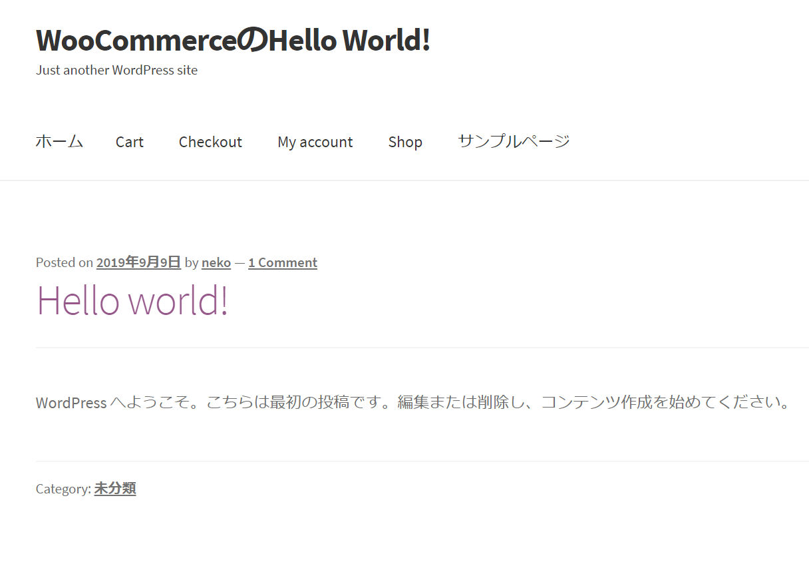
上段の「Shop」を選択すると入力した商品が表示される。
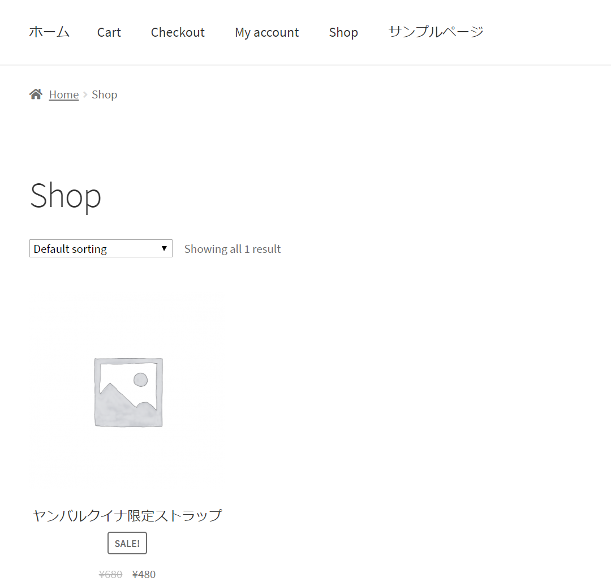
WooCommerceの管理画面が英語表記になっている場合、 WordPress左メニューの「更新」から更新ページにアクセスし、 「翻訳を更新」をクリックする。
するとWooCommerce管理画面関連の表記は英語から日本語になる。 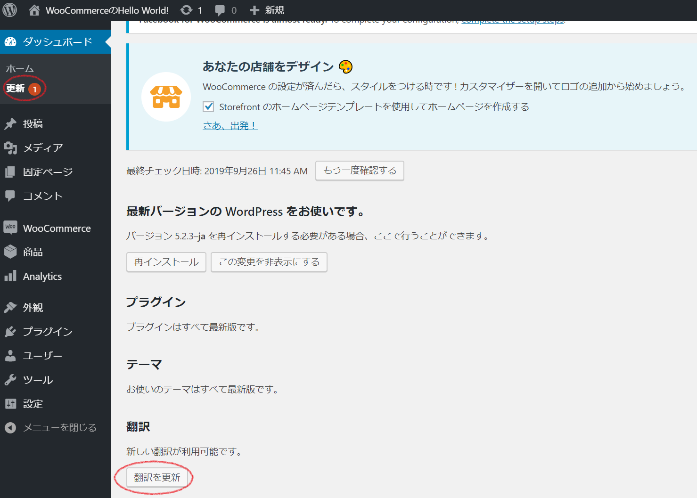
お客向けのページを日本向けにする場合、「Japanize For WooCommerce」プラグインをインストールする。
単に日本語になるだけでなく、氏名や住所入力が日本方式になる。
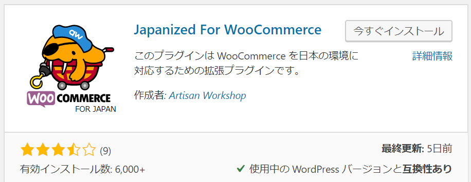
2019-9-26
xxx
2019-9-13
ホーム
プログラミングの覚書
Wordpressの覚書
WooCommerceの覚書